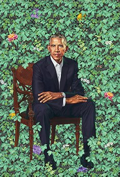

President Barack Obama
Kehinde Wiley · 2018 · Oil on canvas · National Portrait Gallery, Smithsonian Institution, Washington
In copyright. Look and learn: shown for study, not for download.
In October 2017 it was announced that Barack Obama had chosen Wiley to paint his official portrait for the National Portrait Gallery. The artist described the flowers as chrysanthemums, the official flower of Chicago; jasmine, for Hawaii, where Obama spent most of his childhood; and African blue lilies, for his Kenyan father. The portrait was unveiled on February 12, 2018, together with Amy Sherald's portrait of Michelle Obama, and visitor numbers that weekend were three times those of the previous Presidents' Day weekend.